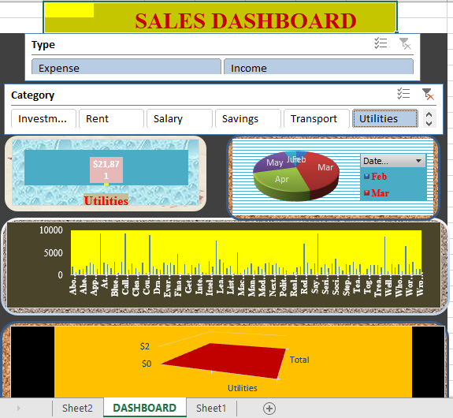
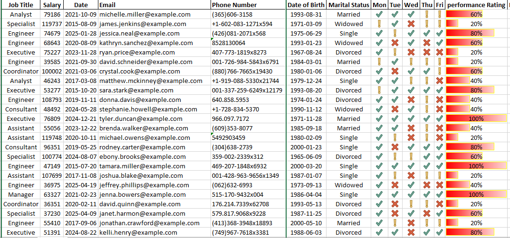

Sales Dashboard
Interactive dashboard built using Excel and Power BI for retail sales insights.
View on GitHub

Employee Attendance Tracker
Transformed unorganized Excel data into a fully interactive progress tracker. Applied conditional formatting, formulas, and charts to visualize attendance and performance statistics effectively.
View on GitHub
Covid-19 Data Analysis
Analyzed WHO Covid data using R and created visualizations with ggplot2.
View on GitHub
General Data Analysis Portfolio
Worked on multiple datasets performing tasks like data cleaning, manipulation, visualization, and interpretation using tools like Excel, Python, and Power BI.
Visit netlify